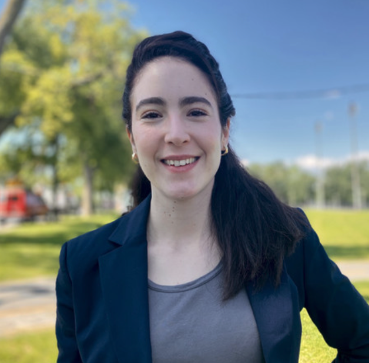

CSER 2024 Spring will be held on the campus of Queen's University, Kingston on June 10-11.
CSER meetings seek to motivate engaging discussions among faculty, graduate students and industry participants about software engineering research in a broad sense, as well as the intersection between software engineering, other areas of computer science, and other disciplines.




Abstract: Given either a specification written in natural language or an input program, automated program generation techniques produce a program according to the given specification or by modifying the input program. Automated program generation is a powerful technique that can be used for finding bugs in software systems that take programs as input or fixing bugs in the input programs. In this talk, I will share our latest results on automated program generation for (1) fixing bugs in large language model (LLM) based automated program generation, (1) testing static program analyzers. For the first part of the talk, I will present our study that categorizes common mistakes in LLM like Codex, and our insights in applying automated program repair techniques in fixing mistakes by Codex. For the second part of the talk, I will introduce several automated testing techniques that find bugs in static analyzers using semantic-preserving transformations, and annotation synthesizers.
Bio:Shin Hwei Tan is an Associate Professor (Gina Cody Research Chair) in Concordia University. Before moving to Concordia University, she was an Assistant Professor in Southern University of Science and Technology in Shenzhen, China. She obtained her PhD degree from National University of Singapore and her B.S (Hons) and MSc degree from UIUC, USA. Her main research interests are in automated program repair, software testing and open-source development. She is an Associate Editor for TOSEM and the Guest Editors in Chief for the New Frontier in Software Engineering track in TOSEM. She has also served as PCs for top-tier software engineering conferences, where she won 3 best reviewers award (FSE 2020, ASE 2020, ICSE 2022 NIER-track).
Abstract: The world is going mobile. Android has surpassed its counterparts and become the most popular operating system all over the world. The openness and fast evolution of Android are the key factors that lead to its rapid growth. However, these characteristics have also created the notorious problem: Android fragmentation. There are numerous different Android device models and operating system versions in use, making it difficult for app developers to exhaustively test their apps on these devices. An Android app can behave differently on the different device models, inducing various compatibility issues that reduce software reliability. Such fragmentation-induced compatibility issues (compatibility issues for short) have been well-recognized as a prominent problem in Android app development. In this talk, I will introduce the problem of Android compatibility issues, review the past efforts to address Android compatibility issues and discuss potential research opportunities surrounding Android compatibility issues.

Bio:Lili Wei is an assistant professor in the department of Electrical and Computer Engineering at McGill University. Prior to joining McGill University, she received her Ph.D. degree and worked as a post-doctoral fellow at the Hong Kong University of Science and Technology. Her research interests lie in program analysis and testing with a focus on mobile apps, smart contracts and IoT software. Her research outcomes were recognized by several awards, including an ACM SIGSOFT Distinguished Paper Award, an ACM SIGSOFT Distinguished Artifact award, a Google PhD Fellowship and a Microsoft Research Asia PhD Fellowship. She is also actively serving the software engineering research community. She received a Distinguished Reviewer Award from ASE 2022. More information can be found on her personal website:https://liliweise.github.io
| Deadline | |
|---|---|
| Presentation abstract submission | TBD |
| Notification | TBD |
| Registration | TBD |

Bio: Zhen Ming (Jack) Jiang is an Associate Professor at the Department of Electrical Engineering and Computer Science, York University. He received his Ph.D. from the School of Computing at Queen’s University, MMath and BMath degrees from the David R. Cheriton School of Computer Science at the University of Waterloo. During his Ph.D. studies, he worked with the Performance Engineering team at BlackBerry/RIM. Tools resulted from his research are currently used daily to monitor and debug the health of several ultra large commercial software systems within BlackBerry.

Bio: Nikolaos Tsantalis is an Associate professor in the department of Computer Science and Software Engineering at Concordia University, Montreal, Canada, and was a Concordia University Research Chair in Web Software Technologies between 2015-2020. His research interests include software maintenance, software evolution, empirical software engineering, refactoring recommendation systems, refactoring mining, and software quality assurance. He has developed tools, such as the Design Pattern Detection tool, JDeodorant and RefactoringMiner, which are used by many practitioners, researchers, and educators.
We invite you to contribute by sending your proposals for:
CSER does not publish proceedings in order to keep presentations informal and speculative.
Montréal is the largest city in the Canadian province of Québec and the second-largest city in Canada. It is the second largest, primarily French-speaking city in the world, after Paris. The official language of Montreal is French, as defined by the city’s charter, yet most of its citizen are bilingual and it is always possible to study, work, and enjoy Montréal in English.
CSER will be held at McGill University, co-locating with CS-CAN|INFO-CAN events. Please check the CS-CAN|INFO-CAN website for updated information about the venue.
Should you need an accommodation you may consider the many hotel in downtown Montreal (within walking distance or by metro).
CSER 2023 Spring registration is handled by CS-CAN|INFO-CAN co-located conference. You can visit the co-located conference website or directly follow the link below to register your ticket.
Registration link (registration deadline: May 31st). Please select "Software Engineering" under the Category selector.
Fees:
Student $100 $125 $150
Non-student $150 $175 $200
Optionally, you can also register other events in the co-located conference. The registration rate is per day.
You also have the option to register the CS-CAN|INFO-CAN awards banquet. The banquet will take place on the evening of Wednesday, June 7th, which will include a 3 course dinner with chicken, salmon and vegetarian options, accompanied by wine. Entertainment will include presentations from each society, including the announcement of several major national awards. The price of the banquet ticket is $110.
The Software Engineering for Machine Learning Applications (SEMLA 2023) international symposium will be held at Polytechnique Montréal, Montréal on June 9th and 10th, right after the CSER 2023 Spring meeting. If you register for CSER 2023, you can receive a discount of 30% off when registering for SEMLA 2023 by applying the promo code “CSER2023S”.